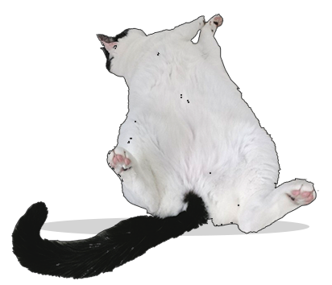
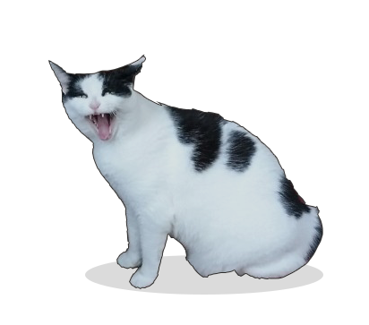
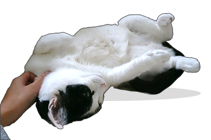

Understand Your Cat
You and your cat might speak different languages, but you can still communicate with each other. Important clues such as the look in your cat's eyes, the tone of their voice, the position of their ears and the motion of their tail can reveal their feelings and intentions. You can learn to read these signals so you will get a good idea of what's on your cat's mind.
|  | Showing Belly |
Sometimes cats expose their tummies out of sheer relaxation. If your little guy is feeling serene and at peace with everything, he may show his belly. He may be feeling content, open and comfortable but at the same time still fully attentive and aware of everything going on around him. |
 | "MEOW" |
Sometimes cats talk simply because they want your attention and they learn that meowing gets them just that. "Cats often meow to initiate play, petting or to get you to talk to them" |
|  | Head Rub |
When a cat rubs or pushes its head against you, also known as head butting or bunting, the cat is also marking you with his scent in a show of affiliation, Borns-Weil says. Affiliative behaviors serve to maintain a connection within a group of individuals. Head rubbing is a cat's way of marking its people and its environment and grouping them together with the same scent. |